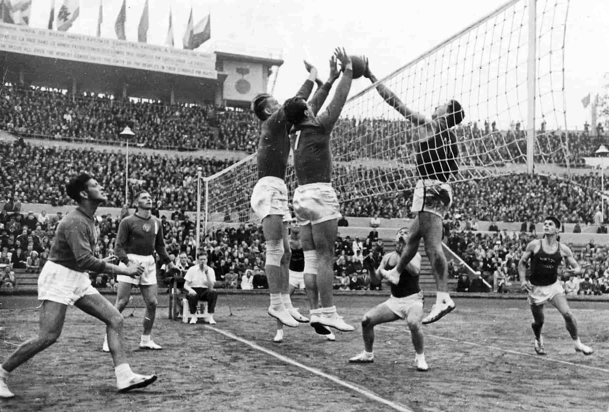
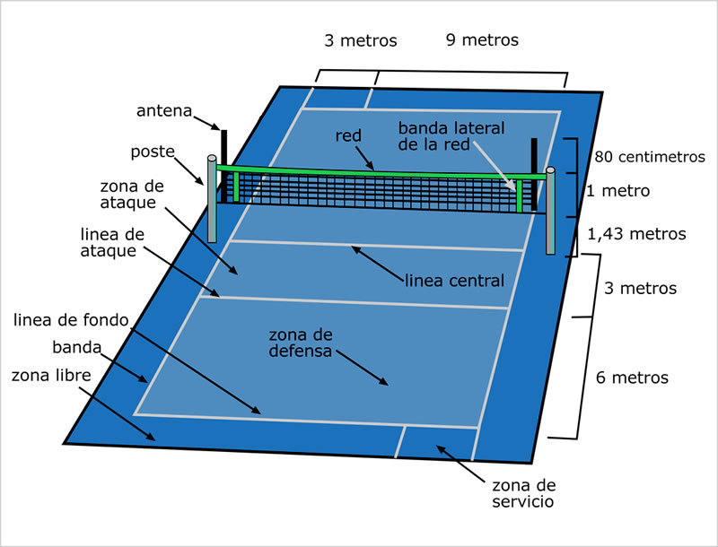
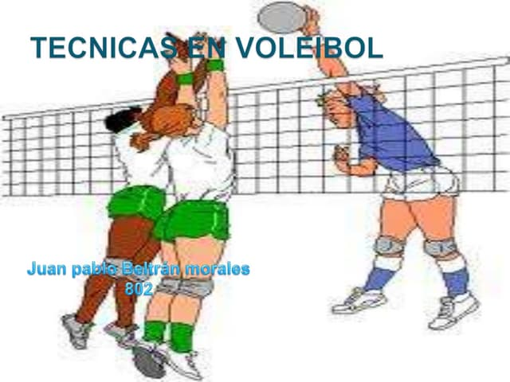

El voleibol fue inventado en 1895 por William G. Morgan, un instructor de educación física en Massachusetts, como una alternativa menos intensa al baloncesto. Originalmente llamado "mintonette", el juego fue diseñado para ser un deporte de interior que combinara aspectos del tenis, balonmano y béisbol. En 1900, el nombre fue cambiado a voleibol y el deporte comenzó a ganar popularidad rápidamente en los Estados Unidos. En 1964, el voleibol fue incorporado como deporte olímpico en Tokio, marcando su estatus como un deporte mundial. Desde entonces, ha evolucionado en reglas, técnicas y estrategias, y se juega en diferentes modalidades, como voleibol de playa y voleibol sentado, siendo un deporte accesible para personas de todas las edades y habilidades.
El voleibol se juega entre dos equipos de seis jugadores en una cancha dividida por una red. Cada equipo tiene como objetivo enviar el balón al otro lado de la red de manera que el equipo contrario no pueda devolverlo dentro de los límites de la cancha. Un equipo puede tocar el balón un máximo de tres veces antes de enviarlo al otro lado, y no se permite que un mismo jugador toque el balón dos veces seguidas. El juego comienza con un saque, y los equipos ganan puntos cuando logran que el balón toque el suelo en el lado contrario. En competencias oficiales, los partidos se juegan al mejor de cinco sets, y el primer equipo en ganar tres sets es el ganador. Cada set se juega a 25 puntos, con una ventaja mínima de dos puntos para ganar.
Además, existen diferentes posiciones en el campo, como el colocador, el atacante, el bloqueador y el líbero, cada una con roles específicos en defensa y ataque. Estas posiciones requieren habilidades particulares y contribuyen a la estrategia del equipo en cada partido.
Las habilidades técnicas en el voleibol son fundamentales para un buen rendimiento en el juego. Algunas de las técnicas más importantes incluyen el saque, el pase, la recepción y el remate. El saque puede ser realizado de diferentes maneras, como el saque de pie, el saque flotante o el saque en suspensión, y es clave para iniciar cada punto con ventaja. El pase, a menudo ejecutado con los antebrazos, es esencial para mantener el control del balón y preparar el ataque. La recepción es la primera defensa contra el saque del equipo contrario y requiere rapidez de reacción y precisión.
El remate es una de las técnicas más emocionantes del voleibol, donde un jugador salta y golpea el balón con fuerza hacia el campo contrario. La coordinación entre el colocador y el atacante es crucial para que el remate sea efectivo. Finalmente, el bloqueo es una técnica defensiva en la que uno o más jugadores saltan cerca de la red para interceptar un ataque del equipo contrario. El dominio de estas técnicas, junto con una buena condición física, es esencial para cualquier jugador de voleibol que quiera destacar en el deporte.
